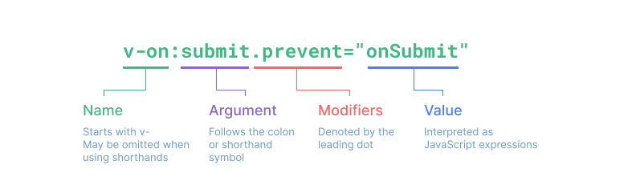
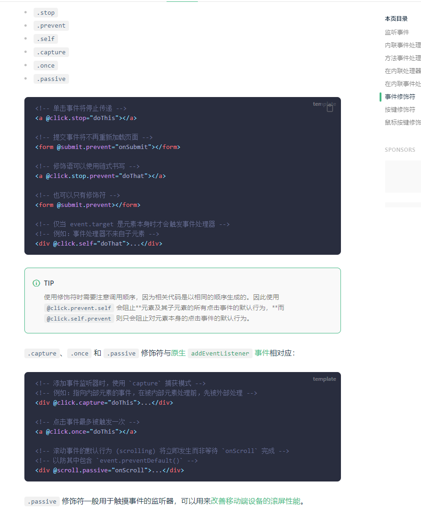
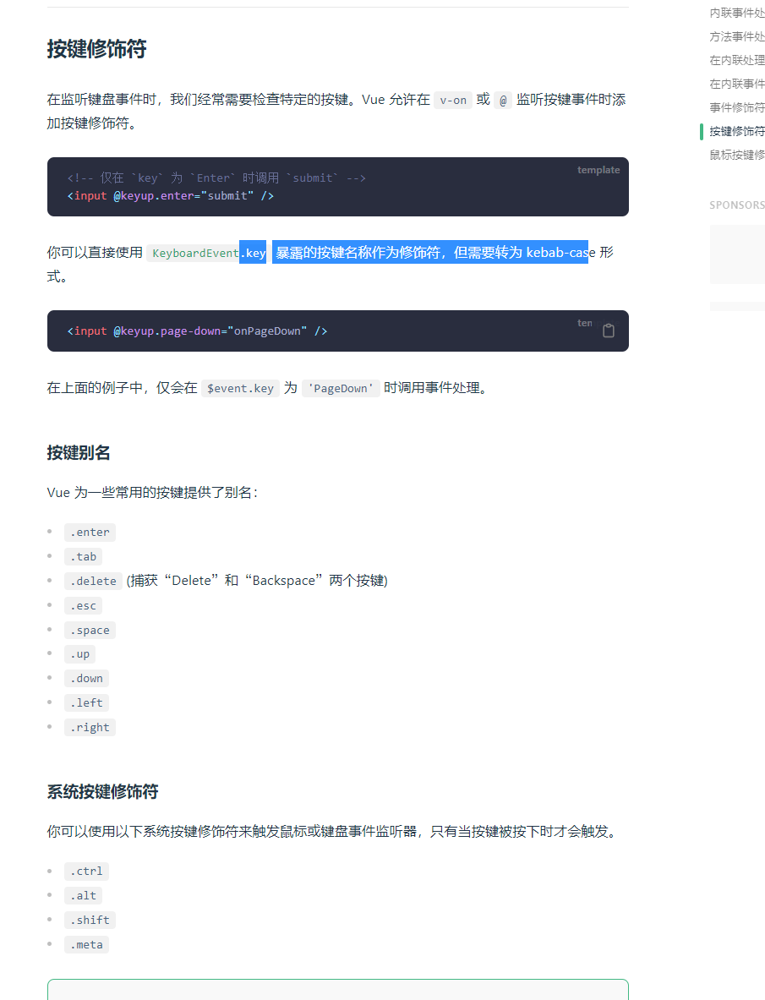
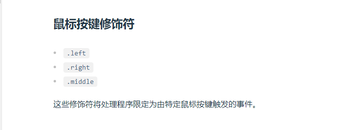

模板语法
目录
v- 开头都是vue 的指令
v-text 用来显示文本
v-html 用来展示富文本
v-if 用来控制元素的显示隐藏（切换真假DOM）
v-else-if 表示 v-if 的“else if 块”。可以链式调用
v-else v-if条件收尾语句
v-show 用来控制元素的显示隐藏（display none block Css切换）
v-on 简写@ 用来给元素添加事件
v-bind 简写: 用来绑定元素的属性Attr
v-model 双向绑定
v-for 用来遍历元素
v-on修饰符 冒泡案例
v-once 性能优化只渲染一次
v-memo 性能优化会有缓存
v-on
v-on 简写@ 用来给元素添加事件




示例：
<script setup lang="ts">
import { ref } from "vue"
let msg: string = "msg"
let msgSplit: string = "我，是，瑾，语"
let num: number = 1
let msgHtml: string = "<span style='color:red'>v-html</span>"
let bindId: string = "1"
let isButtonDisabled = ref(true)
let matchBind = {
id: "matchBindId",
class: "matchBindClass"
}
let toTitleDate = (data: string) => {
return data + ":test";
}
let btnClick = () => {
isButtonDisabled.value = !isButtonDisabled.value
console.log(isButtonDisabled)
}
let iftext: string = "a"
let forArrary: Array<string> = ["a", "b", "c"]
</script>
<template>
<h1>模板语法</h1>
<div>
{{ msg }}
<br>
{{ num == 1 ? '我是瑾语' : '我不是瑾语' }}
<br>
{{ msgSplit.split("，") }}
<br>
<p v-html="msgHtml"></p>
<br>
<span v-bind:id="bindId">测试</span>
<span :id="bindId">bind缩写测试</span>
<br>
<button :disabled="isButtonDisabled">{{ isButtonDisabled ? "禁用" : "启用" }}</button>
<button v-show="!isButtonDisabled">显示show</button><br>
<button v-on:click="btnClick">点击切换</button>
<button @click="btnClick">点击切换缩写</button>
<h3>bind动态绑定多个值</h3>
<span v-bind="matchBind">bind动态绑定多个值</span>
<h3>bind调用函数</h3>
<span :title="toTitleDate('test')">bind动态绑定多个值</span>
<h3>if指令</h3>
<span v-if="iftext == 'a'">a</span>
<span v-else-if="iftext == 'b'">b</span>
<span v-else="iftext">c</span>
<h3>for指令</h3>
<div v-for="info, index in forArrary">
<span>{{ index }}:{{ info }}</span>
</div>
</div>
</template>
<style>
.matchBindClass {
color: red;
}
#matchBindId {
font-size: small;
}
</style>